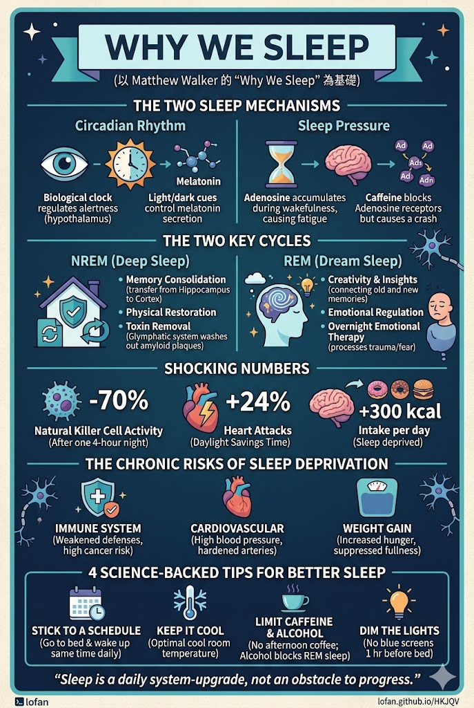

你試過早上嗌鬧鐘，卻只係瘋狂撳掣再多瞓五分鐘嗎？喺香港呢個急速城市，好多人將睡眠視為浪費時間，靠咖啡撐住一日，甚至以「捱夜」為努力嘅勳章。但神經科學家 Matthew Walker 用超過20年嘅研究，寫成《為什麼要睡覺》一書，徹底顛覆呢個觀念——睡眠唔係奢侈品，而係支撐生命、大腦同免疫系統嘅最核心基礎。
要明白睡眠，首先要認識大腦入面兩大機制：其一係晝夜節律，由下視丘交叉上核控制，靠光線訊號指揮分泌褪黑激素；其二係睡眠動力，由化學物質腺苷驅動——你醒得越耐，腺苷積聚越多，睡眠壓力越大。咖啡因其實並唔提供能量，只係佔據腺苷受體，暫時屏蔽睏睡訊號，但幾個鐘後咖啡因代謝散，積壓嘅腺苷瞬間湧入大腦，引發強烈嘅「咖啡崩潰」。

NREM（非快速眼動）睡眠係記憶鞏固嘅黃金期。日頭學到嘅資訊暫存於海馬體，入深度睡眠時大腦發出慢波，將短期記憶搬至大腦皮質長期儲存，清空海馬體以備翌日再學。更重要係，深度睡眠會啟動大腦膠淋巴系統，像強力清潔器般沖走代謝廢物，包括與老人癡呆症高度相關嘅類澱粉蛋白。長期缺乏深度睡眠，等同令大腦毒素不斷積聚。
REM 睡眠期間我哋發夢，大腦將新舊記憶重新聯結，從中發現規律同洞見——好多偉大發明都係「瞓一覺」之後頓悟。REM 仲係夜間情緒治療師：喺低壓力激素環境下重放記憶，逐漸剝離情緒中嘅恐懼同創傷，只保留有用嘅經驗。所以「時間治癒一切」，更準確應說係「睡眠治癒一切」。
人類進化史上從未發展出應付睡眠不足嘅安全網。每晚少於七八小時，免疫系統即開始崩潰——研究顯示只要一晚只瞓四小時，負責消滅癌細胞嘅自然殺手細胞數量急跌70%。睡眠不足亦直接引爆心血管疾病，持續令血壓升高、血管硬化。至於減肥難？睡眠不足會同時壓低飽腹感激素、升高飢餓素，令人每日不自覺地多食約300卡路里，且特別渴求高糖高脂垃圾食物。